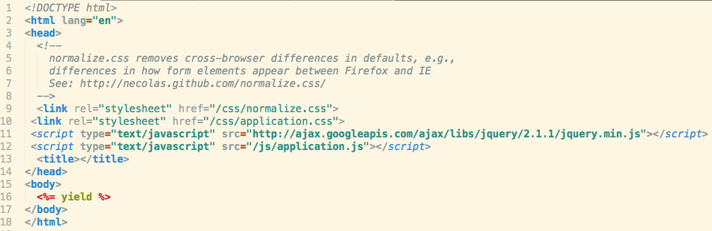
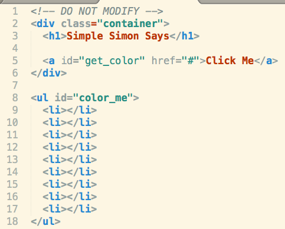
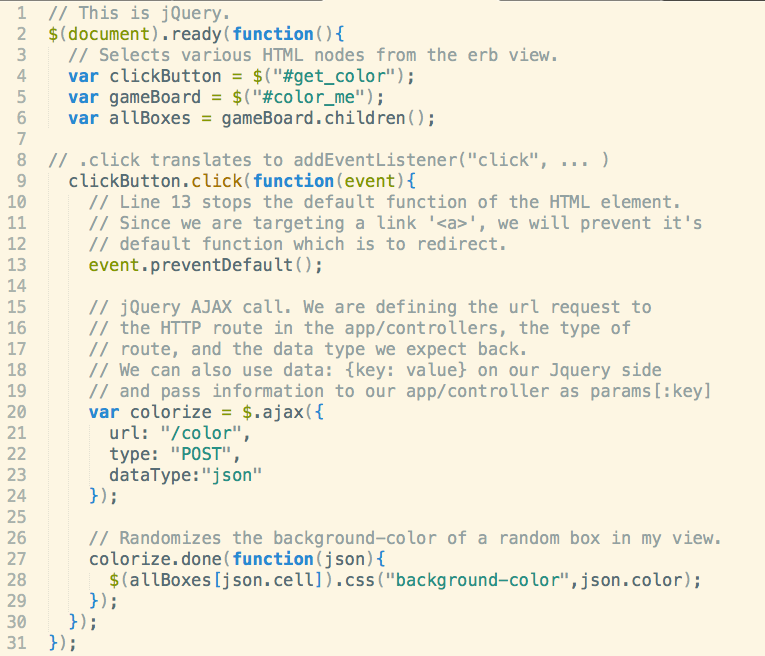
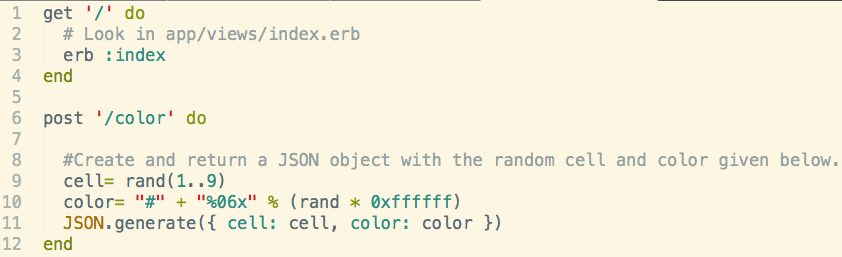

Asynchronous JavaScript and XML
AJAX is a Javascript technique that allows you to update an application's view and controller(and consequently the model) without continuously refreshing the page.
This is important since now we can access an application's controller, whereas before we could only change an application's views.
Let's walk through the workflow of a particular AJAX challenge.
- Include the JS file in your layout.erb view
- Check out your app/views
- Create your JavaScript File.(needs to select HTML nodes and call the AJAX method)
- Modify your app/controllers. Since we are expecting information in our JS file from an HTTP route, we need to remove redirect'/' and put in a JSON generator